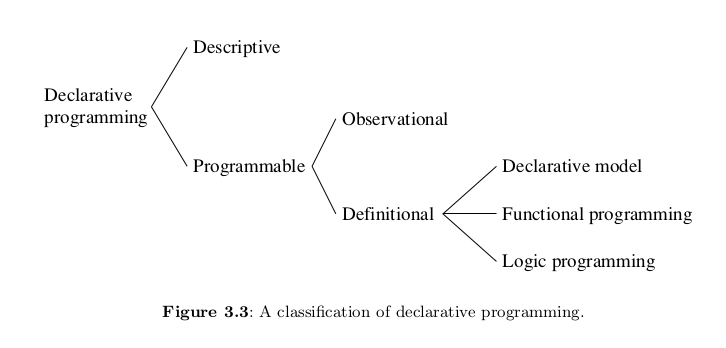

(Common) LISP
Di Santo, Javier - 101696
Dvorkin, Camila - 101109
Secchi, Anita - 99131

Historia [Fede]
Early LISP History (1956 - 1959) ~ Herbert Stoyan
History of Lisp ~ John McCarthy
Revenge of the Nerds ~ Paul Graham
Lets LISP like it’s 1959 // LISP and the foundations of computing

“Programming is the problem of describing procedures or algorithms to an electronic calculator.”
~ John McCarthy, The Programming Problem
¿Por qué nace LISP?
Un lenguaje de programación para Inteligencia Artificial Simbólica.
- ¿Cómo se representa el conocimiento humano en términos computacionales?
McCarthy busca un lenguaje: Explicito, universal, conciso.
Una respuesta al modelo secuencial (la máquina de Turing) y al paradigma imperativo (FORTRAN).
¿Cómo nace LISP?
Idea
En los 50 se empiezan a desarrollar los primeros lenguajes de alto nivel (FLOW-MATIC, FORTRAN)
En 1956, en una conferencia de AI, McCarthy se inspira para comenzar a diseñar LISP (LISt Proccessing) usando:
Las ideas de procesamiento de listas y recursión de IPL-II
El alto nivel de FORTRAN (1957) y su expresión algebraica.
La notación del cálculo Lambda de Alonzo Church.
¿Cómo nace LISP?
Definición
1958: “An Algebraic Language for the Manipulation of Symbolic Expression”
Primer diseño (incompleto) de LISP.
Comienzos de la programación funcional.
1960: “Recursive Functions of Symbolic Expressionsand Their Computation by Machine, Part I”
Especificación completa de LISP, un lenguaje teórico, que no estaba pensado para ser implementado.
Solución más comprensible a la máquina de Turing.
Para demostrar que es Turing-Completo, define una “función universal de LISP”, que luego llegaría a ser
eval.
¿Cómo nace LISP?
Implementación
1960: Steve Russell, un alumno de McCarthy, decide probar e implementar en código máquina
eval- Primer interprete de LISP, para la IBM 704.
1962: Tim Hart y Mike Levin hacen el primer compilador de LISP.
Lo más cercano al LISP que conocemos hoy en día.
Funciones compiladas e interpretadas pueden ser intercambiadas libremente.
Cálculo Lambda
https://youtu.be/eis11j_iGMs
?x. x?x.
(lambda (x) (x*x))
The power of the lambda notation is in its generality. The lambda notation will handle the case in which the value of a function is a function. In many computer languages the value of a function must be an element of a set, such as a number or a string or the label of a function. In the lambda notation the value can be a function, not the name or label of a function but a function itself.
https://www.sjsu.edu/faculty/watkins/lambda.htm
- Calculo Lambda no tipado: expresa mas que el calculo lambda tipado
Caracteristicas del Lenguaje
Paradigma [Fede]
- 
Peter Van-Roy, Concepts, Techniques, and Models of Computer Programming
Programación declarativa: definir el qué sin explicar el cómo
Programación funcional: los componentes se definen como funciones matemáticas
Determinístico
Misma entrada garantiza misma salida
No hay estado
No hay efectos secundarios
Programación de alto orden:
Funciones como ciudadanos de primera clase: se pueden usar en cualquier contexto
Funciones de alto orden: poder recibir como parametro o retornar funciones
Lisp es un lenguaje de programacón de tipo multiparadigma: soporta más de un paradigma de programación
Lisp es orientado a objetos, reflexivo, imperativo y funcional: el programador será capaz de crear programas usando más de un estilo de programación, sin estar forzado a tomar un estilo en particular.
Existen otros lenguajes multiparadigma como - Python: éste además de programación orientada a objetos, programación imperativa y programación funcional, acepta otros paradigmas soportados mediante el uso de extensiones - Oz: incluye la idea de programación lógica, funcional(tanto lazy como eager), impertativa, orientada a objetos, con restricciones, distribuida y concurrente.
In functional programming, functions avoid two habits common in other languages: mutation (= changing data in-place rather than returning a value) and relying on state (= extra context that’s not provided as input, for instance global variables).
- ¿¿dataflow vs logicflow??
Pionero [Cami]
What Made Lisp Different ~ Paul Graham
Influential Programming Languages, Lisp ~ David Chisnall
if-then-else: Las expresiones condicionales fueron definidas en el paper de 1960, con
cond. Un condicional es un una construcción if-then-else; hoy en día los damos por hecho. Fueron inventados por McCarthy en el transcurso de desarrollo de Lisp.Funciones: Las funciones son objectos de primera clase, son un tipo de dato como lo son los enteros, cadenas, etc. Tienen una representación literal, pueden ser asignadas a variables, pasadas como argumentos (parámetros)…
Recursión: Ya existía matemáticamente, pero nunca en un lenguaje de programación
Un nuevo concepto en variables: Todas las variables son efectivamente punteros. Los valores son aquellos que tienen tipos, no variables. Asignar variables significa copiar punteros, y no aquello a lo que apuntan.
Garbarge Collection: Con un diseño primitivo (no era concurrente), LISP fue el primer lenguaje en utilizar garbage collection automático.
Tipado dinámico: No hay que explicitar si algo es un átomo o una lista.
Interactividad: Gracias al interprete REPL se tiene feedback inmediato y se puede programar desde abajo para arriba, compilando incrementalmente.
El lenguaje completo está siempre disponible: No hay una distinción real entre tiempo de lectura, tiempo de compilación y tiempo de ejecución. Uno puede compilar o ejecutar mientras lee, leer o ejecutar código mientras compila, leer o compilar mientras se ejecuta el código.
Map y Reduce: LISP fue el primer lenguaje en implementar dos funciones muy importantes en la programación funcional.
Evaluacion [Cami]
Eager / Data-driven evaluation
Lisp is usually evaluated eagerly. In Common Lisp, arguments are evaluated in applicative order (‘leftmost innermost’).
Compilado/interpretado [Cami]
How is Lisp dynamic and compiled? - StackOverflow
Las funciones pueden ser compiladas de forma individual o por el archivo.
Funciones compiladas o interpretadas se comportan de la misma forma, excepto con el comando
compiled-f unction-pque verifica si la función pasada por parámetro fue compilada.Common List no es un compilador en tiempo de ejecución, sino que es necesario invocar al compilador medicante las funciones COMPILE, para las funciones individuales y COMPILE-FILE, para los archivos.
El compilador puede recibir instrucciones sobre qué tan dinámico debe ser el código compilado
Intérprete REPL(Read-Eval-Print-Loop): se tiene feedback inmediato y se puede programar desde abajo para arriba, compilando incrementalmente
La función eval, va a toma las entradas individuales del usuario(s-expression pre parseada), las evalúa y devuelve el resultado al usuario
No existe una distinción entre el tiempo de compilación, tiempo de ejecución y el tiempo de lectura:
- Ejecutar código en tiempo de lectura permite al usuario reprogramar la sintáxis de Lisp. - Ejecutar código en tiempo de compilación es la base de las macros. - Compilar en tiempo de ejecución es la base del uso de Lisp como un lenguaje de extensión en programas como lo es Emacs. - Leer en tiempo de ejecución permite a los programas comunicarse utilizando _s-expressions_, una idea recientemente reinventada como _XML_. (Interpretado || Compilado) -> True << es interactivo o interpretado???>>
Tipado [Cami]
Tipado dinámico: las verificaciones de tipo se realizan en tiempo de ejecución y las variables se pueden configurar de forma predeterminada para todo tipo de objetos.
Lisp es dinámico: tanto el lenguaje de programación Lisp como el programa en sí se pueden cambiar en tiempo de ejecución, se le permite al usuario agregar, cambiar y eliminar - funciones - construcciones sintácticas - tipos de datos - sintáxis
Explota en runtime
Tipado fuerte: explota
Tipado dinamico: en runtime
Lexical/Static/dynamic scoping [Cami]
- Identificador asociado con el entorno más reciente al declarar con
special.
Ejemplo:
(le t ((x 20))
(declare (specia l x))
(foo))Expression oriented / Simbolico [Fede]
https://beautifulracket.com/appendix/why-racket-why-lisp.html
Usa S-Expressions: Simbolic expression
Lisp is an expression oriented language. Unlike most other languages, no distinction is made between “expressions” and “statements”;[dubious – discuss] all code and data are written as expressions. When an expression is evaluated, it produces a value (in Common Lisp, possibly multiple values), which can then be embedded into other expressions. Each value can be any data type.
https://en.wikipedia.org/wiki/Expression-oriented_programming_language
Transparencia referencial: equals can be replaced by equals
Metaprogramming / Extensibilidad [Javi]
https://sep.yimg.com/ty/cdn/paulgraham/onlisp.pdf?t=1564708198&
cahpter 4 de practical common lisp
Further, because Lisp code has the same structure as lists, macros can be built with any of the list-processing functions in the language. In short, anything that Lisp can do to a data structure, Lisp macros can do to code. In contrast, in most other languages, the parser’s output is purely internal to the language implementation and cannot be manipulated by the programmer.
https://youtu.be/dw-y3vNDRWk
The Lisp feature that makes this trivially easy is its macro system. I can’t emphasize enough that the Common Lisp macro shares essentially nothing but the name with the text-based macros found in C and C++.
https://beautifulracket.com/appendix/why-racket-why-lisp.html#a_vmsLq
https://beautifulracket.com/appendix/why-racket-why-lisp.html#a_pwJR1
“language-oriented programming”
comparar como se extiende python o C normalmente https://stevelosh.com/blog/2018/08/a-road-to-common-lisp/#s6-extensibility y http://www.gigamonkeys.com/book/macros-standard-control-constructs.html
Hablar de extensiones “populares” (importantes) del lenguaje
Darle mucha bola a CLOS! que es importantisimo en la historia de lisp (chusmear relacion con smalltalk!!!) (chusmear como CLOS es de lo mas “puro” en cuanto a Object Oriented)
Concurrencia
String interpolation
Solo en librerías.
Bordeaux Threads para la creación de hilos.
lparallel para una implementación más compleja que incluye comunicación entre hilos (colas, promesas, etc).
Blackbird implementación de promesas (la dejo porque no la encontré en cl-awesole).
“los macros son parte de lo que es la extensibilidad de list” –> pie para entrar a la siguiente seccion
Macros [Javi]
Esta seccion que sea bien teorica con codigo (pero poco codigo). Los ejemplos ejemplos van en sintaxis
En Lisp, una macro es una función que genera código de Lisp. La forma más sencilla de pensarlo sería como una transformación de código. Cuando se llama a una macro en el código:
- Se arma el código en base a la definición
defmacrode la misma. - Se evalúa el nuevo código en el lugar de la llamada a la macro.
A partir de esto, se pueden usar macros para simplificar y reutilizar código, o hasta manipular la sintaxis del lenguaje.
- Algunos operadores:
Backquote `: Funciona similar aquote. (se explica antes?)
Comma ,: Combinado conbackquotesirve para “activar y desactivar” el efecto debackquote. Es útil al escribir macros:
Comma-at ,@: Dada una expresión que resuelve una lista, se puede utilizar,@para reemplazar esta lista por la secuencia de sus mismos elementos (elimina el paréntesis):
(nil! x): Cambiar el valor de la variablexanil. En el ejemplo se puede observar quevarse expande al valor que corresponde (por el operador,), mientras quesetqynilno se evalúan.
(defmacro nil! (var)
`(setq ,var nil))
; se llama de la forma
(nil! x)
; genera el código
(setq x nil)(if test then else): Ya se encuentra definida en Lisp. Tiene que ser una macro para evaluar la expresión solo cuando corresponda. Una posible implementación utilizaría la macrocond, que evalúa solo la primer expresión cuya condición sea true:
(when test do1 do2 ...): Cuando la expresióntestdevuelvetrue, se ejecutan todas las expresionesdo, devolviendo el valor de la última. Para que se expandan todas las expresionesdose las combina en una lista&rest bodyy luego se utiliza el operador,@:
(defmacro our-when (test &rest body)
`(if ,test
(progn
,@body)))
; se llama de la forma
(when test do1 do2 do3)
; genera el código
(if (eligible obj)
(progn do1
do2
do3
obj))infix: Las macros permiten cambiar el orden de las expresiones sin evaluarlas. Entonces, se podría hacer una macroinfixpara tener operadores matemáticos en notación de infijo en vez de la notación polaca de Lisp. Existen implementaciones completas de esta macro para que funcione con más de una operación, pero para mostrar la más simple:
(defmacro infix (arg1 op arg2)
`(,op ,arg1 ,arg2))
; se llama de la forma
(infix 2 + 3)
; genera el código
(+ 2 3)lcomp: Replicar la sintaxis de compresión de listas de Python.
(defmacro lcomp (expression for var in list conditional conditional-test)
(let ((result (gensym)))
`(let ((,result nil))
(loop for ,var in ,list
,conditional ,conditional-test
do (setq ,result (append ,result (list ,expression))))
,result)))
; se llama de la forma
(lcomp x for x in (1 2 3 4 5 6 7) if (= (mod x 2) 0))
; una vez generado y ejecutado el código devuelve
(2 4 6)let:
(defmacro let (binds &body body)
‘((lambda ,(mapcar #’(lambda (x)
(if (consp x) (car x) x))
binds)
,@body)
,@(mapcar #’(lambda (x)
(if (consp x) (cadr x) nil))
binds)))while:
till:
for:
Homoiconicidad (“Code as Data”) [Javi]
“This means that the way you think about a programming problem can be quite close to the way you actually program it.”
Gracias a las S-Expressions
Codigo y estructuras de datos intercambiable
La representación interna del programa es la que se lee
Todo es una lista -> Code and Data are made out of the same data structures, and the quote operator is the way we distinguish between them
Reflexion mucho mas sencilla
Lisp functions can be manipulated, altered or even created within a Lisp program without lower-level manipulations
Extensibilidad mucho mas facil
List of lists ??? Tree!
And how do we deal with trees? Recursion!
El abstract syntax tree de una funcion se puede manipualr como una estructura de datos y luego evaluar
s-expressions can represent arbitrary tree expressions, much like the usual abstract syntax tree
anything that Lisp can do to a data structure, Lisp macros can do to code
This feature makes it easy to develop efficient languages within languages. For example, the Common Lisp Object System can be implemented cleanly as a language extension using macros. This means that if an application needs a different inheritance mechanism, it can use a different object system. This is in stark contrast to most other languages; for example, Java does not support multiple inheritance and there is no reasonable way to add it.
Las s-expresiones son binary trees porque son o atomos o (x y) siendo (x . y) un dotted pair (x hijo izq, y hijo der)
(hoy por hoy se usa el sintacic sugar LIST, que es nada mas concatenar mil dotted pairs. (x y z) es (x . (y . (z . null))))
foto binary tree
Dualidad entre el codigo y la data.
Todo es una lista por ende tanto el código, como la data se escriben de la misma forma
Toda expresión se puede interpretar de las dos maneras. - Se interpreta como data usando
quote- Se interpreta como code usandoevalMisma expresión que se puede leer de ambas formas y permite swapear dependiendo que necesite.
Manejo de memoria [Anita]
Las variables de Lisp apuntan a sus valores.
Todos los valores son conceptualmente un puntero.
Manejo de memoria automática-> Consing.
Sistema de garbage collection.
Para tener una representación más inmediata, Lisp podría devolver un pequeño integer en vez de un puntero.
Excepto que se declare lo contrario, se podrá almacenar cualquier tipo de objeto en cualquier estructura de datos (incluyendo la estructura misma).
Si o Si hablar de garbage collection aca!!!
Manejo de errores [Anita]
Los errores puede ser señalizados por una amplia variedad de razones. Muchas funciones intregradas en Common Lisp, dan señal de error cuando se le da un parámetro incorrecto. Otras funciones, son llamadas por programas del usuario con el propósito de señalizar el error.
-Work in progress, pls do not touch
TDA [Anita]
que te da el lenguaje?
“mas tarde vemos un ejemplo concreto: la tabla de hash”
Sintaxis
Learn X in Y minutes, Where X=Common Lisp
notacion polaca
kebab case
Expresiones -> átomos y listas
;; Todo en LISP se compone de symbolic expressions
1 ; Una s-expression puede ser un átomo -> irreducible
(+ 1 2) ; Una s-expression puede ser una lista -> partible
;; Las s-expressions evaluan a valores
2 ; evalua a 2
(+ 2 3) ; evalua a 5
(+ (+ 2 3) 2) ; (+ 2 3) evalua a 5 -> todo evalua a 7
;; Acá comienza la dualidad entre código (la lista) y data (el átomo)
;; Ambos son S-expressionsCode & Data -> eval, quote
;; El operador quote toma una s-expression y devuelve el código
(+ 1 1) ; evalua a 2
(quote (+ 1 1)) ; evalua a (+ 1 1)
('(+ 1 1)) ; quote se abrevia a '
;; El operador eval toma una s-expresion y devuelve su valor
(eval (+ 1 1)) ; evalua a 2
(eval '(+ 1 1)) ; evalua a 2
(eval ''(+ 1 1)) ; evalua a (+ 1 1)
;; 1 + 1 es 2
;; "1 + 1" es el código 1 + 1Puedo hacer un programa entero, ponerle un ' adelante, y estoy tratando con el código de mi programa.
Chequeando Valores -> atom, listp
¿Es código o data?
;; atom devuelve si algo es un átomo o no
(atom 1) ; True (el valor de la expresion 1 es un átomo)
(atom (+ 1 2)) ; True (el valor de la expresion (+ 1 2) es un átomo)
(atom '(+ 1 2)) ; Nil (la expresion (+ 1 2) es una lista)
;; listp devuelve si algo es una lista o no
(listp 1) ; Nil (1 no es una lista)
(listp (+ 1 2)) ; Nil (la expresion evalua a 3, no es una lista)
(listp '(+ 1 2)) ; True (estoy hablando del código de la expresion, la lista)Procesar listas -> car, cdr, cons y list
Las listas en LISP son listas enlazadas
Los “nodos” (dato y prox) se llaman cons cells
El dato actual es el car
El resto es otra lista, el cdr
;; car recibe una lista y devuelve su primer elemento
(car (+ 1 2)) ; explota, no recibio una lista
(car '(+ 1 2)) ; devuelve +
;; cdr recibe una lista y devuelve el resto (todo menos el primer elemento)
(cdr '(+ 1 2)) ; devuelve (1 2)
;; cons crea un cons de un valor seguido de una lista
;; AKA agrega un valor al principio de la lista
(cons '1 '(2 3)) ; devuelve (1 2 3)
(cons '+ '(2 3)) ; devuelve (+ 2 3)
;; list compone una lista de sus argumentos
(list 1 2 3) ; devuelve (1 2 3)
(list '+ 2 3) ; devuelve (+ 2 3)
;; si tan solo hubiese una manera de ejecutar esta expresion!Procesar una s-expression -> Programming Bottom Up
;; Partimos de la expresion (+ 1 2)
(+ 1 2)
;; La convertimos en el código de la expresion
'(+ 1 2)
;; Sacamos su operador -> el +
(car '(+ 1 2))
;; Sacamos los operandos -> el (1 2)
(cdr '(+ 1 2))
;; Empaquetamos esto nuevamente -> (+ 1 2)
(cons (car '(+ 1 2)) (cdr '(+ 1 2)))
;; Evaluamos la expresion
(eval (cons (car '(+ 1 2)) (cdr '(+ 1 2))))Control de flujo [Tal vez sacarlo?][o convertirlo en buenos ejemplos de codigo de whiles/fors/ifs/conds]
Estructuras para organizar programas: formas especiales(flet, etiquetas) o macros(macrolet).
Versatilidad en funciones definidas localmente y macros.
Facilidad de iteración general.
Facilidad de iteración y mapeo en estructura de datos.
Condicionales unidireccionales simples
whenyunless.Condicional bidireccional simple
if.Condicionales multidireccionales
condycase.
Ejemplo de macros [Javi]
expandir macro
Compararlo contra la definciion “canonica” de ese macro (lo que hay en el hyperspec)
crear un propio macro
Closures [Sacarlo? o darle mejor forma y ponerlo como comparacion a OZ? o agregar mas cosas tipicas de programacion funcional (y te queda un popurri de 3 o 4 features de FP)]
- La variable debe persistir mientras la función lo haga.
- Variables léxicas válidas dentro del contexto en donde son definidas.
- Variable libre: Se continua haciendo referencia a una variable por fuera (mientras se continue usando el mismo contexto del cual fue definida).
- Lisp permite devolver una función como valor como cualquier otro objeto.
A continuación se muestra un ejemplo. Por un lado, la función combine toma argumentos de cualquier tipo y los combina de forma apropiada. combiner toma un argumento y devuelve una función para combinar argumentos de cualquier tipo.
(defun combiner (x)
(typecase x
(number #'+)
(list #'append)
(t #'list)))
(defun combine (&rest args)
(apply (combiner (car args))
args))Namespaces [Fede -> Se liga un poco a la comparacion con scheme]
Un simbolo puede referirse a:
- Una variable
- Una clase
- Una función
- Un operador especial
- Un macro
Hay dos namespaces en LISP:
Function namespace: funciones, operadores especiales, macros
Variable namespace: variables, clases
Lisp-1 (scheme) vs. Lisp-2 (clisp) debate
;; Defino una variable y una función con el mismo nombre
(setq X 1)
(defun X (arg) (+ 10 arg))
; Un simbolo por defecto evalua al variable namespace
X ; => 3
; Para referirme explicitamente al function namespace, llamo a `(function symbol)`
(function X) ; => #<FUNCTION X>
; #' es syntactic sugar de function
(#'X) ; => #<FUNCTION X>
; Hay que tener cuidado con lo que quiero
(funcall X 3) ; Explota. Estoy llamando a la variable X
(funcall #'X 3) ; => 13https://wiki.c2.com/?SingleNamespaceLisp
Ejemplo de TDA: Tablas de hash [Anita]
Crear una tabla de hash en Common Lisp
- función
make-hash-table - No requiere ningún argumento.
Ejemplo:
Sin embargo, el argumento opcional más usado es :TEST, que especifica la función utilizada para testear claves iguales.
Agregar un elemento a la tabla
- función
gethashen conjunto con la funciónsetf
Obtener un valor
- función
gethashtoma dos argumentos obligatorios: una clave y una tabla de hash
Ejemplo:
* (defvar tabla)
TABLA
* (setq tabla (make-hash-table :test 'equal))
#<HASH-TABLE :TEST EQUAL :COUNT 0 {10058B8553}>
* (setf (gethash "clave1" tabla) 3)
3
* (gethash "clave1" tabla)
3
TEn el siguiente ejemplo, guardamos NIL en el hash:
Borrar de la tabla de hash
- función
remhashpara eliminar el par clave-valor
Contar entradas
- función
hash-table-count
El tamaño del hash
- función
make-hash-table
* (defvar tabla)
TABLA
* (setq tabla (make-hash-table :test 'equal))
#<HASH-TABLE :TEST EQUAL :COUNT 0 {10058B8553}>
*(hash-table-size tabla)
16 ; por default
*(hash-table-rehash-size tabla)
1.5 ; indica que la tabla se agrandará en un 50% cada vez que necesite crecer.Los valores para
hash-table-sizeyhash-table-rehash-sizedependen de la implementación. En este caso, la implementación de Common Lisp con la cual contamos, elige un tamaño inicial de 16, y aumentará el tamaño en un 50% (1.5) cada vez que el hash necesite crecer.Ejemplo: agregar un total de un millón* de pares clave-valor al hash:
* (time (dotimes (n 1000000) (setf (gethash n tabla) n))) ; le tomo el tiempo que tarda
Evaluation took:
0.162 seconds of real time
0.161954 seconds of total run time (0.137696 user, 0.024258 system)
[ Run times consist of 0.015 seconds GC time, and 0.147 seconds non-GC time. ]
100.00% CPU
355,501,132 processor cycles
83,836,896 bytes consed
NIL
* (hash-table-count tabla)
1000000
* (hash-table-size tabla)
1048576*Se eligió un millón para resaltar los tiempos que tardan
- Y si piso todas las claves y tomo el tiempo nuevamente:
* (time (dotimes (n 1000000) (setf (gethash n tabla) n)))
Evaluation took:
0.088 seconds of real time
0.088449 seconds of total run time (0.088449 user, 0.000000 system)
100.00% CPU
194,161,741 processor cycles
0 bytes consed
NIL- Veamos cuantas veces temenos que redimensionar para llegar al tamaño final:
* (log (/ 1000000 16) 1.5)
27.235197
* (let ((size 16)) (dotimes (n 29) (print (list n size)) (setq size (* 1.5 size))))
(0 16)
(1 24.0)
(2 36.0)
(3 54.0)
(4 81.0)
(5 121.5)
(6 182.25)
(7 273.375)
(8 410.0625)
(9 615.09375)
(10 922.6406)
(11 1383.9609)
(12 2075.9414)
(13 3113.912)
(14 4670.868)
(15 7006.3022)
(16 10509.453)
(17 15764.18)
(18 23646.27)
(19 35469.406)
(20 53204.11)
(21 79806.164)
(22 119709.25)
(23 179563.88)
(24 269345.8)
(25 404018.72)
(26 606028.06)
(27 909042.1)
(28 1363563.3)
NILSe redimensiona 28 veces hasta que sea lo suficientemente grande para contener 1,000,000 de claves con sus respectivos valores.
Una manera de hacerlo más rápido: Si ya sabemos con anticipación que tan grande nuestro hash será, podemos comenzar con el tamaño correcto desde el vamos:
* (defvar tabla)
TABLA
* (setq tabla (make-hash-table :test 'equal :size 1000000))
#<HASH-TABLE :TEST EQUAL :COUNT 0 {10039B0043}>
* (hash-table-size tabla)
1000000
* (time (dotimes (n 1000000) (setf (gethash n tabla) n)))
Evaluation took:
0.086 seconds of real time
0.085881 seconds of total run time (0.085881 user, 0.000000 system)
100.00% CPU
188,651,959 processor cycles
0 bytes consed
NIL- Se prueba que tarda considerablemente menos tiempo.
- No hubo alocamientos involucrados ya que no hubo que redimensionar en absoluto
- Se puede anticipar el comportamiento de crecimiento que tendrá el hash: parámetro
:rehash-sizeen la funciónmake-hash-table
* (defvar tabla)
TABLA
* (setq tabla (make-hash-table :test 'equal :rehash-size 1000000))
#<HASH-TABLE :TEST EQUAL :COUNT 0 {100589D563}>
* (hash-table-size tabla)
16
* (hash-table-rehash-size tabla)
1000000
* (time (dotimes (n 1000000) (setf (gethash n tabla) n)))
Evaluation took:
0.120 seconds of real time
0.120026 seconds of total run time (0.116221 user, 0.003805 system)
[ Run times consist of 0.017 seconds GC time, and 0.104 seconds non-GC time. ]
100.00% CPU
263,851,583 processor cycles
41,943,104 bytes consed
NIL- Solamente necesitamos una redimensión, pero mucho màs realocamiento (41,943,107 bytes consed) porque casi toda la tabla (menos los 16 elementos iniciales) tuvieron que se construídos durante la iteración.
Fun stuff e iteradores del hash
Si se quiere realizar una acción sobre cada par clave-valor en la tabla de hash, existen múltiples opciones:
maphash: itera sobre todas las claves de la tabla. Su primer argumento debe ser una función que acepte dos parámetros: la clave y el valor. Muy importante notar y recordar que, dado la naturaleza de las tablas de hash, uno no puede controlar el orden en el cual las claves son devueltas.maphashdevuelve siempleNIL.
* (defvar tabla)
TABLA
* (setq tabla (make-hash-table :test 'equal))
#<HASH-TABLE :TEST EQUAL :COUNT 0 {100589D0E3}>
* (setf (gethash "clave1" tabla) 1)
1
* (setf (gethash "clave2" tabla) 2)
2
* (setf (gethash "clave3" tabla) 3)
3
* (defun imprimir-entrada (clave valor) (format t "El valor asociado a la clave ~S es ~S~%" clave valor))
IMPRIMIR-ENTRADA
* (maphash #'imprimir-entrada tabla)
El valor asociado a la clave "clave1" es 1
El valor asociado a la clave "clave2" es 2
El valor asociado a la clave "clave3" es 3
NIL
*with-hash-table-iterator: es una macro que convierte el primer argumento en un iterador que en cada invocación devuelve tres valores cada clave-valor del hash: un booleano generalizado que estruesi alguna entrada es devuelta, la clave, y el valor. Si no encuentra más claves, devuelveNIL
* (with-hash-table-iterator (iterador tabla)
(loop
(multiple-value-bind (entrada clave valor)
(iterador)
(if entrada
(imprimir-entrada clave valor)
(return)))))
El valor asociado a la clave "clave1" es 1
El valor asociado a la clave "clave2" es 2
El valor asociado a la clave "clave3" es 3
NILloop:la vieja confiable
Formateado clave-valor:
* (loop for clave being the hash-keys of tabla using (hash-value valor)
do (format t "El valor asociado a la clave ~S es ~S~%" clave valor))
El valor asociado a la clave "clave1" es 1
El valor asociado a la clave "clave2" es 2
El valor asociado a la clave "clave3" es 3
NILSolo el valor:
Clave y valor:
* (loop for valor being the hash-values of tabla using (hash-key clave) do (format t "~&~S -> ~S" clave valor))
"clave1" -> 1
"clave2" -> 2
"clave3" -> 3
NILHASH TABLE: http://cl-cookbook.sourceforge.net/hashes.html - https://www.tutorialspoint.com/lisp/lisp_hash_table.htm
Desglosando eval [Fede]
The Roots of LISP ~ Paul Graham
The Most Beautiful Program Ever Written ~ William Byrd
La magía de LISP es el read–eval–print loop: un entorno donde se toma lo escrito por el programador, se lee, se evalua, se imprime, y luego se vuelve a pedir input
Este self-interpreter es un evaluador meta-circular, esta escrito en LISP y puede evaluar código de LISP.
¿Cómo? Gracias a la función
eval, definida por McCarthy en base a 7 operadores que toma como axiomas:quote,atom,eq,car,cdr,consycond
That was the big revelation to me when I was in graduate school—when I finally understood that the half page of code on the bottom of page 13 of the Lisp 1.5 manual was Lisp in itself. These were “Maxwell’s Equations of Software!” This is the whole world of programming in a few lines that I can put my hand over.
~ Alan Kay, A Conversation with Alan Kay

;; Anotaciones sobre el código de Paul Graham en Roots of Lisp
; The Lisp defined in McCarthy's 1960 paper, translated into Common Lisp.
; eval recibe una expresion `e` y una lista de argumentos `a` -> El "entorno"
; Básicamente, recibe todo el scope donde estoy parado
(defun eval (e a)
; Es todo un if grande de 4 condiciones que chequean el tipo de la expresion
(cond
; Si es un atomo -> Devuelvo su valor en el entorno
((atom e) (assoc e a))
; Si no es un atomo tiene que ser una lista
; Si es una lista del tipo (atomo...resto) -> Es una función!
; (car e) es el operador
; (cadr e) es (car (cdr e)) que es el primero de los argumentos
((atom (car e))
; Si Es una funcion, ¿que funcion es?
(cond
; Si es quote, solo devuelvo los argumentos de la funcion
((eq (car e) 'quote) (cadr e))
; Para el resto de los axiomas, llamo a esa funcion contra los argumentos
; Como quiero llamar a la operacion contra los valores de los argumentos, llamo a eval
((eq (car e) 'atom) (atom (eval (cadr e) a)))
((eq (car e) 'eq) (eq (eval (cadr e) a)
(eval (caddr e) a)))
((eq (car e) 'car) (car (eval (cadr e) a)))
((eq (car e) 'cdr) (cdr (eval (cadr e) a)))
((eq (car e) 'cons) (cons (eval (cadr e) a)
(eval (caddr e) a)))
; cond tiene que evaluar recursivamente todas las condiciones, hasta encontrar el primer true
; para eso, se define una funcion auxiliar, `evcon` que recorre la lista de parametros y los evalua
((eq (car e) 'cond) (evcon (cdr e) a))
; el caso final es recibir una funcion definida por el usuario
('t (eval (cons (assoc (car e) a)
(cdr e))
a))))
; Si no es un atomo ni una lista que comienza por un atomo, entonces es una lista que comienza por otra cosa
; Si es una lista que comienza con label, evaluo la funcion a la que refiere
((eq (caar e) 'label)
(eval (cons (caddar e) (cdr e))
(cons (list (cadar e) (car e)) a)))
; Si es una lista que comienza con lambda, evaluo sus parametros
((eq (caar e) 'lambda)
(eval (caddar e)
(append (pair (cadar e) (evlis (cdr e) a))
a)))))LISP en la practica
Estadisticas [Cami/Javi]
- repos de github
Se incluyen estadísticas de uso del lenguaje, frameworks y la evolución en los últimos años. Para lenguajes antiguos se incluye información sobre qué lenguajes o técnicas se vieron influenciadas por este lenguaje
http://blockml.awwapps.com/example/example/document.html#sec-6
Comparaciones [Cami/Anita]
- repetir tema de la influencia y de como todo lenguaje se ve tocado por lisp
- comparar con python
- con C performance
- con oz, scala, haskell
- con dialectos de lisp como scheme y racket
- con javascript para decir como se influencia por shcem
Se destacan las diferencias del lenguaje contra otros con propósito similar, se incluyen además benchmarks o ejemplos que identifiquen diferencias.
https://wiki.c2.com/?LispSchemeDifferences
http://www.norvig.com/python-lisp.html
https://hyperpolyglot.org/lisp
- armar secciones tipo lisp vs x
LISP vs Scheme
Los dos dialectos principales a elegir son Common Lisp y Scheme (OJO, no pongamos esto, hay mil mas!!!), ambos tienen ventajas y desventajas, pero las diferencias entre ellos sigue siendo chica que comparando contra otros lenguajes, así que no importa cual elejas para empezar. ¿Cuál debería aprender, Common Lisp o Scheme? Cuál es la diferencia?
- Common Lisp: Es poderoso pero feo
- Scheme: Es chiquito y limpio, pero el estándar solamente define es inner core del lenguaje.
- Si tuviera que crear una aplicación, probablemente es mejor ir por Common Lisp.
- Si tuviera que enseniar (no tengo enie) en un curso, usaria Scheme (pero con macros de Common Lisp)
Casos de estudio [Cami/Anita]
Se mencionan casos reales indicando el motivo por el cual se sabe o se cree que se usa el lenguaje
emacs
crash bandicoot
beating the averages!!!! (http://www.paulgraham.com/avg.html)
https://github.com/CodyReichert/awesome-cl